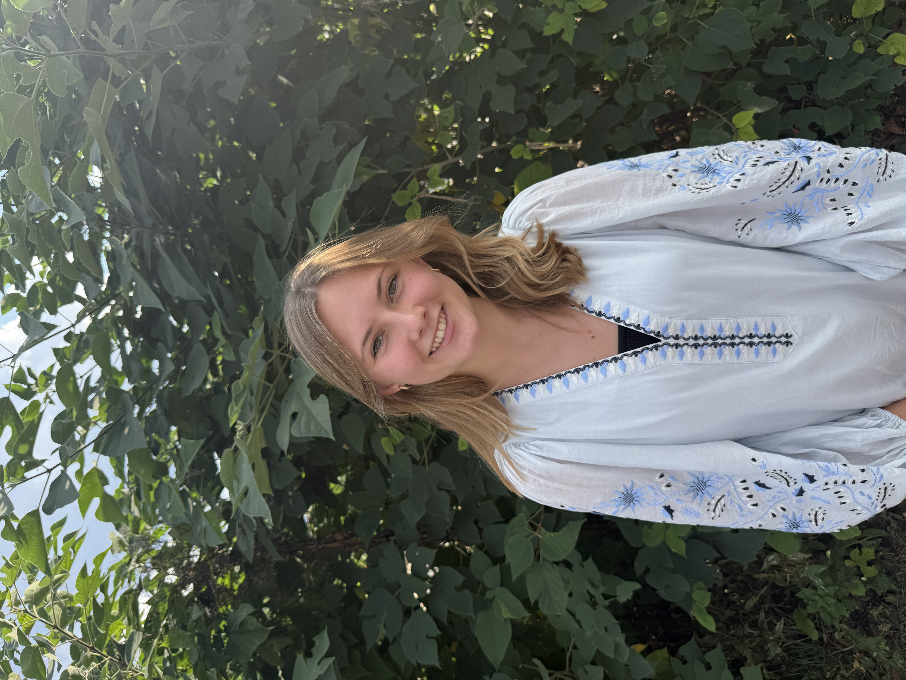
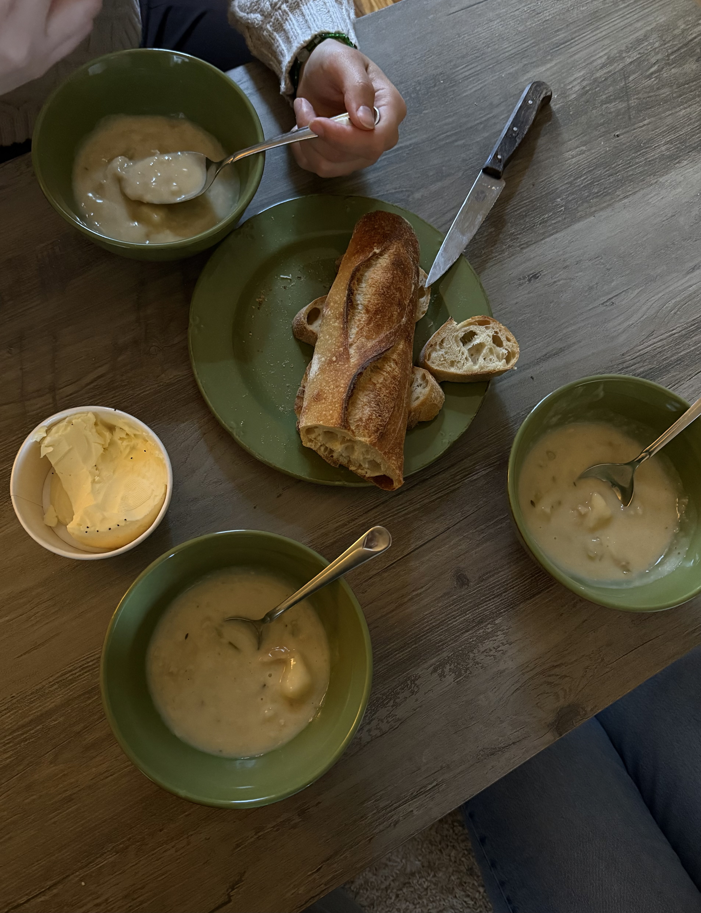
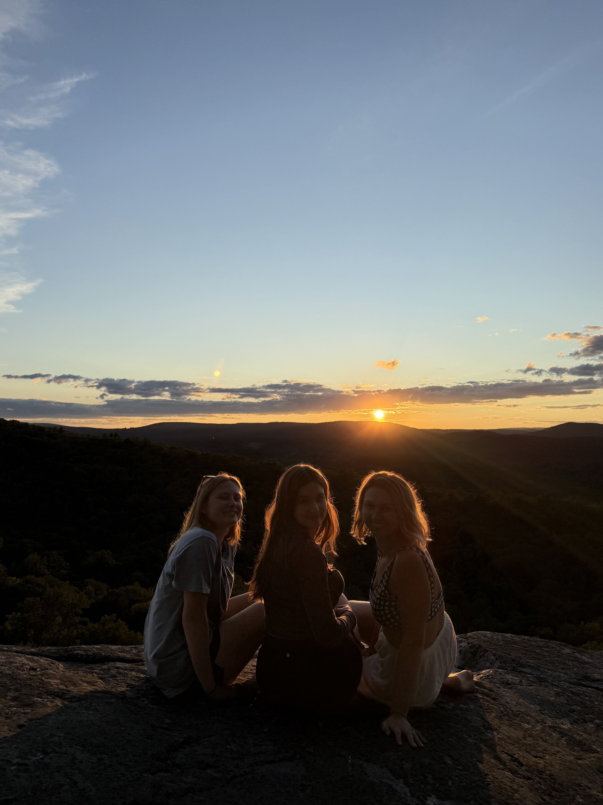
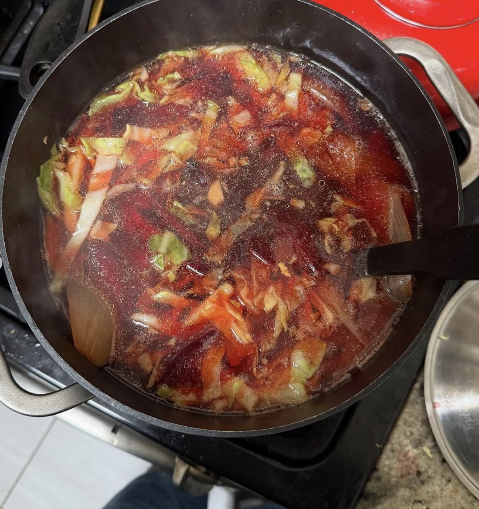
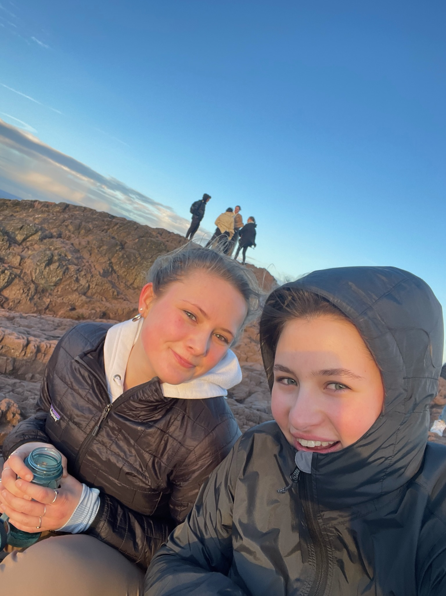
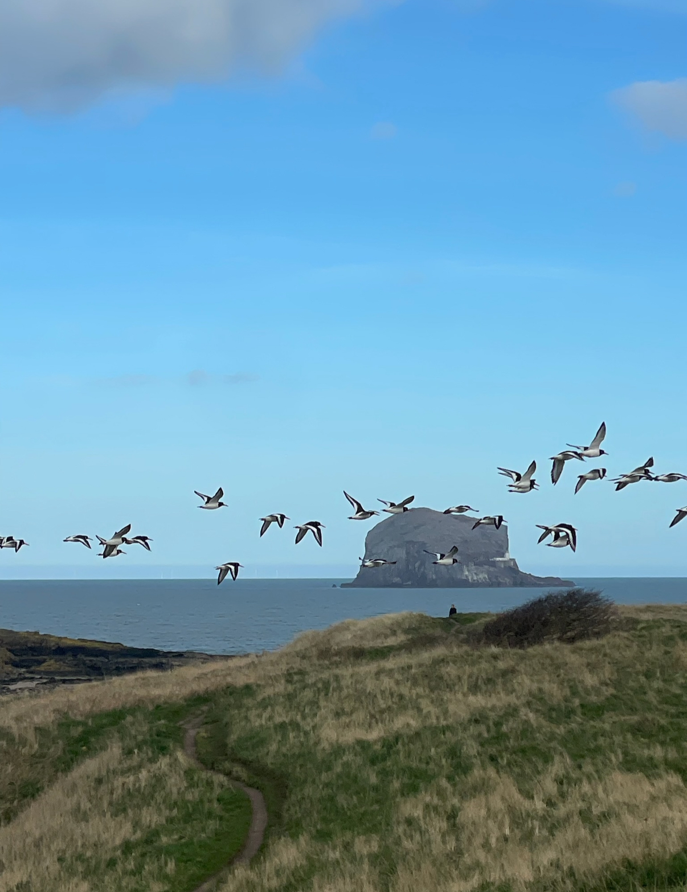
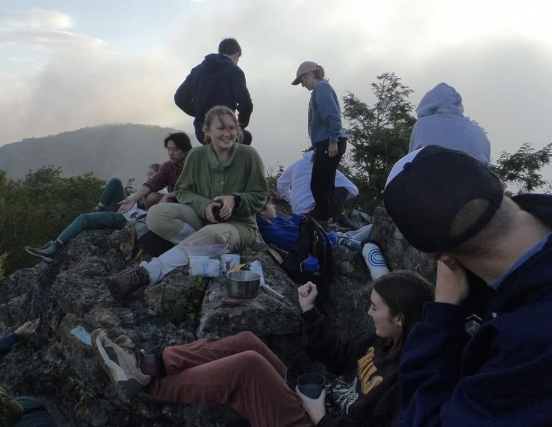

Hi, I'm Maryana!
I studied Economics, Geography, and GIS at George Washington University. I'm interested in how environmental and social systems interact, and how geospatial analysis can help us understand the processes shaping landscapes, communities, and ecosystems.
My work combines spatial analysis, data visulalization, and storytelling to explore these questions and communicate findings to different audiences. Currently, I am a Dangermond Fellow at the National Audubon Society, where I work on the Enterprise GIS team developing tools and workflows that support conservation research, planning, and decision-making.
I also make maps for fun! Outside of work, I love spending time outside, experimenting with different creative projects, making soup, and learning new things.
Please explore my work and feel free to reach out if you have questions or would like to discuss or collaborate on a project!





